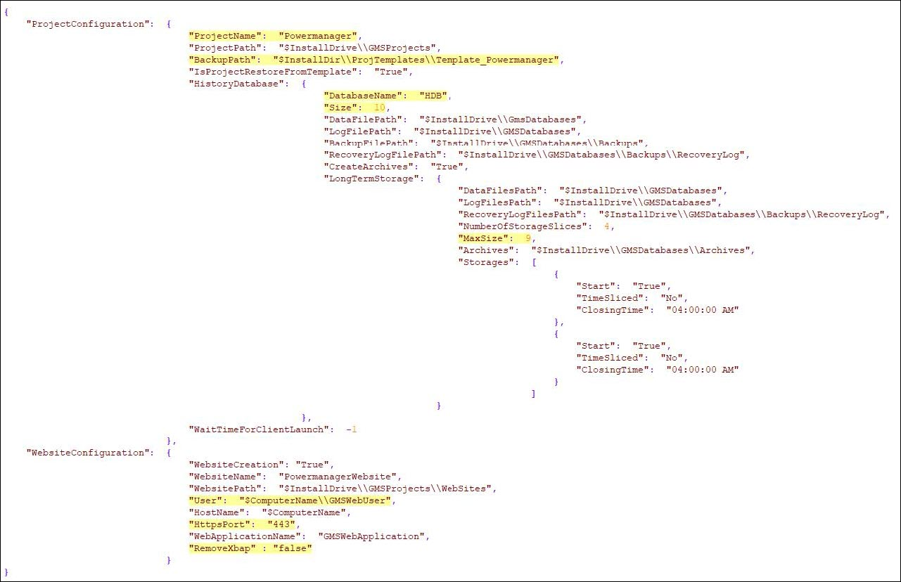
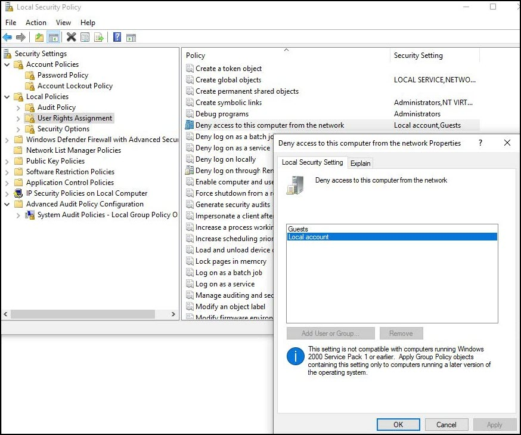

Post Installation Steps for Powermanager
The post installation steps of Powermanager are used to configure the following:
- Website
- WSI application
- D3 Visualization application
- Advance Reporting application
Considerations for Post Installation Steps
IIS is configured
Powermanager extension and associated extensions including WSI, Advance Reporting, D3 Visualization are installed.
For working with Modbus devices, Modbus extension is installed.
For working with IEC61850 devices you have installed IEC61850 Power Devices extension.
Post Installation Steps for Powermanager:
- In case of Major Upgrade:
Copy "AutomaticProjectConfiguration.json" file from path: “\InstallFiles\EM\Powermanager\AddSW\PowerManagerInstallation\” on following folder path: “\InstallFiles\EM\SMC\PostInstallation\AutoProjectStartup\”
In case of Minor Upgrade:
Copy "AutomaticProjectConfiguration.json" file from path: “\InstallFiles\Upgrades\EP\EM\Powermanager\AddSW\PowerManagerInstallation\” on following folder path: “\InstallFiles\Upgrades\EP\EM\SMC\PostInstallation\AutoProjectStartup\” 
- Change the project name from "Powermanager” to appropriate value if required: "ProjectName": "Powermanager"
- Change the database name from “HDB” to appropriate value if required:
"DatabaseName": "HDB" - Set appropriate database size, default is 10 GB configured by the following: "Size": 10
- Set appropriate size for each storage slice, default is 9 GB configured by the following “MaxSize": 9
- Make sure that the port 443 is not in use by any other application using IIS. If the port is in use, then assign appropriate Port in the configuration file: "HttpsPort": "443"
If you change the Port please make sure that they are allowed by Chrome browser, to check this you can browse for unsafe ports by Chrome - Make sure that your Local security policy allows local accounts to access network. If the local account is denied access as shown in the image below, specify a user in the json file with proper access rights for website:
"User": "YourDomain\\UserName" 
- Edit the respective Post Installation files on correct locations:
Edit the extension of following post-installation files from “.txt” to “.xml”.
For a major upgrade do the following: - "SMCPostInstallationConfig.txt" on path:
\InstallerDVD\InstallFiles\EM\SMC\PostInstallation\ - "Advanced_ReportingPostInstallationConfig.txt" on path:
\InstallerDVD\InstallFiles\EM\Advanced_Reporting\PostInstallation\ - "D3_VisualizationPostInstallationConfig.txt" on path:
\InstallerDVD\InstallFiles\EM\D3_Visualization\PostInstallation\ - "Web_Service_InterfacePostInstallationConfig.txt" on path:
\InstallerDVD\InstallFiles\EM\Web_Service_Interface\PostInstallation\ - For a minor upgrade do the following:
- "SMCPostInstallationConfig.txt" on path:
\InstallFiles\Upgrades\EP\EM\SMC\PostInstallation\ - "Advanced_ReportingPostInstallationConfig.txt" on path:
\InstallFiles\Upgrades\EP\EM\Advanced_Reporting\PostInstallation\ - "D3_VisualizationPostInstallationConfig.txt" on path:
\InstallFiles\Upgrades\EP\EM\D3_Visualization\PostInstallation\ - "Web_Service_InterfacePostInstallationConfig.txt" on path:
\InstallFiles\Upgrades\EP\EM\Web_Service_Interface\PostInstallation\ - Run Installer and install "Power Monitoring" extension module and all its dependencies. In case you have IEC61850 devices explicitly select the "IEC61850 Power Devices" as well.
Template project for Powermanager will be in:
<InstallDirectory>:\\ProjTemplates\\Template_Powermanager\\ - Proceed with the management station installation along with the post installation steps execution. (see Install the Management Station)
- After the successful installation, Powermanager project is created along with this:
- Web site is created.
- Database is created with 2 LTS.
- WSI, Advanced Reporting, D3 Visualization post installation steps executed.
NOTE: Every storage will have two storage slices. - Next, the user name for Desigo CC Client is set to defaultadmin and password is 1, reset the password on first logon and launch Desigo CC.
For more information, see Installing and Configuring Powermanager Extension.

Ensure that the Powermanager report templates are synchronized properly. The templates can be found in the below location:
…\Powermanager\libraries\Global_powermanager_HQ_1\AdvancedReports
Template synchronization, mapping of network, and assigning application rights is not required if the project is restored.